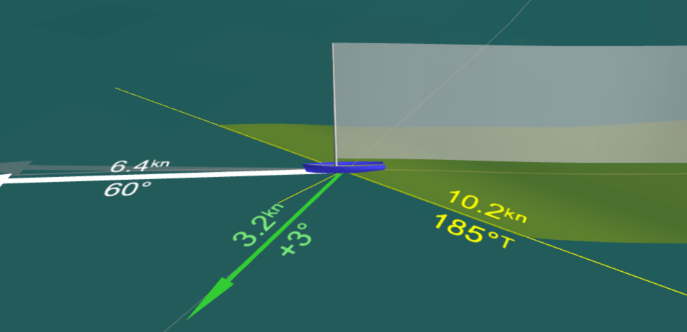
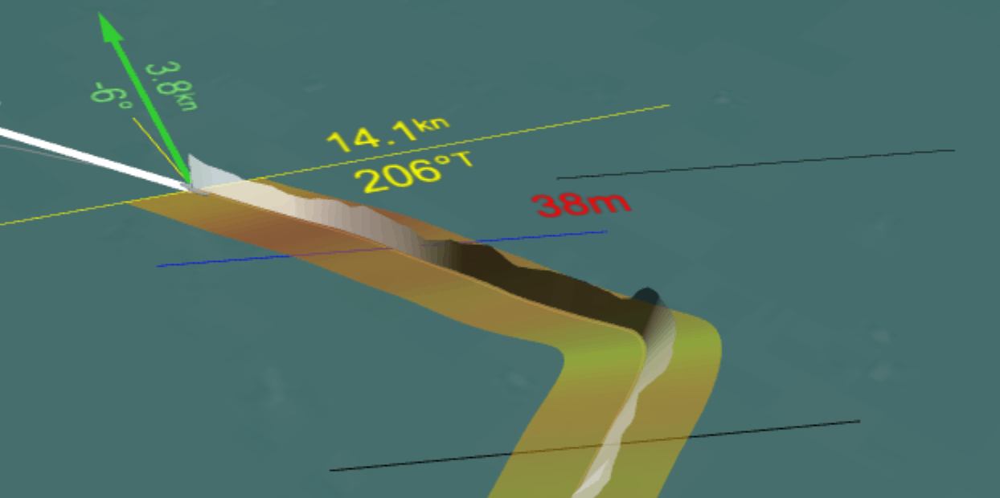

See Sailing's interface is covered with lines and numbers. Let's discuss what they actually mean....
The timeline is broken into legs, which are further broken into stretches of 'straight line' sailing and manoeuvres:
Beats are the light grey areas with lighter grey blocks showing tacks.
The fringes show when we are on port or starboard tack.
Runs are the dark grey areas with black blocks showing gybes.
The fringes show when we are on port or starboard gybe.
Reaches have white backgrounds, do not differentiate between port and starboard, and have no manouevres.
The vertical red line on the left shows 'now', the current time within the recording; the time shown on the main display; and the time shown on the timestamp at the bottom right of the screen.
A legend is provided for the graph and it is important to note that it shows the current values of the graphed parameters.
The graph is context sensitive and will show those parameters most relevant to analysing performance for the current leg.
True Wind Speed is the only parameter that is consistent across the entire graph.
It is always displayed on a scale from 0 to 30 knots.
Beats additionally show the true wind angle and vmg:
True Wind Angle is the angle formed between the true wind direction and the centreline of the boat (the earth-centric equivalent is True Wind Direction).
It is displayed on a scale from 20° to 60° with the lowest values being at the top of the graph. A higher line implies pointing higher.
VMG is defined as progress made in the drection of the wind, and therefore does not include a change in progress made towards a top mark as the result of sailing on a shift.
It is displayed on a scale from 0 to 10 knots.
Runs display the same data as beats with the following changes:
True Wind Angle has a scale from 120° to 180° with lowest values again at the top of the graph. A lower line implies heading lower.
VMG has the same scale, but it's meaning is inverted - a positive VMG implies progress made downwind.
Reaches are not concerned with VMG or pointing angle and hence carry just one additional parameter:
SOG is the speed across ground as reported by the GPS.
It is displayed on a scale from 0 to 15 knots.
For sake of completeness it is worth noting that a manouevre is classed as the period of time being 20 seconds before the True Wind Angle crosses the centreline to 40 seconds after.
The scatter diagrams appear to the right of the timeline and show the entire leg's worth of data (excluding samples from within manoeuvres) so the current performance can be compared. Note that the True Wind Speed is shown by changing the colour of the plot points with a scale (fixed 0 to 30 knots) on the right.
They are again context sensitive for a beat, reach or run. Within each context you can switch between different graphs by clicking on the graph itself (they cycle through).
Available comparisons are currently VMG against pointing angle for both beats and runs - effectively deriving the upper and lower parts of the boat's polars; and SOG vs heel for reaches. Each graph is available as both absolute values (ie VMG in knots), and as an efficiency figure showing returns per unit True Wind Speed - for example VMG might be 0.3 times True Wind Speed.
From the scatter diagram above we can see the yacht's optimal pointing angle is in the range 35° to 40°.
Various arrows, lines etc. are drawn on the main view attached to the graphic of your yacht...
The white arrow represents the speed and heading in true degrees. The numbers are Speed in knots; and the True Wind Angle ie. the pointing angle and not the yacht's heading.
The grey arrow next to it may be visible if this recording has water referenced data. It shows the speed and course over ground as reported by the GPS.
The green arrow shows VMG and points directly upwind. The numbers are VMG in knots; and the bias on the current tack in degrees where positive values mean "beneficial" and not "clockwise". Same as with the graphs, it's worth noting that VMG is calculated against the current true wind direction and not some geometric property of the leg itself.
The long yellow line is drawn perpendicular to the true wind direction at the yacht, and at a right angle to VMG, and thus represents the "equally windward" line used when visualising tactics. The numbers are true wind speed in knots, and absolute wind direction in true degrees.
The smaller light yellow line visualises the apparent wind speed and direction ie that experienced "across the deck".
A note on tack bias: Bias is calculated against the average true wind direction for the leg (using only samples taken while not in a manoeuvre), and not against some geometric property of the course. A side effect of this is that a leg that has a wind bend and/or shift (going, say, left) will appear to have a stronger opposite (right) bias at the start of the leg and vice versa at the end. Fortunately this leads to results that work with the "be inside through the turn" rule and hence is actually a desirable trait.
See Sailing will also analyse your tacks and gybes, reporting on the distance lost (or gained) during the manoeuvre. A manoeuvre is defined as the period from 20s before the True Wind Angle crosses the centreline to 40s after.
It makes more sense when you see it animated.
The first black line (bottom in the above diagram) shows where See Sailing took a sample of the yacht's position, speed and course over ground. True wind direction is taken as the average for the leg.
The second black line (above and right) shows a prediction of where the yacht would have been if the speed and course would have remained constant.
The blue line (left) shows the actual course the yacht took and its resulting location at the end of the end of the manouevre.
The number (between blue and black lines) is the distance directly into the wind that was lost as a result, in metres. Red is a lost distance, green is a gain.
Gaining during a manoeuvre is most common when a significant header is encountered after the start of the sampling period. Thus a well executed tack-on-header will actually show as a gain.